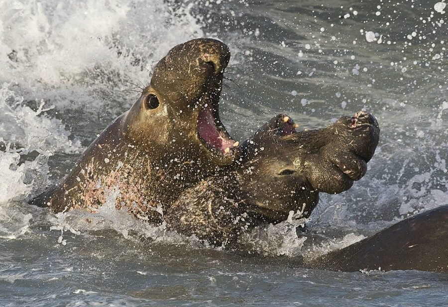
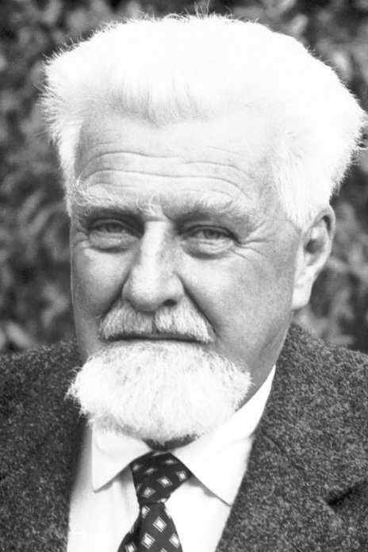
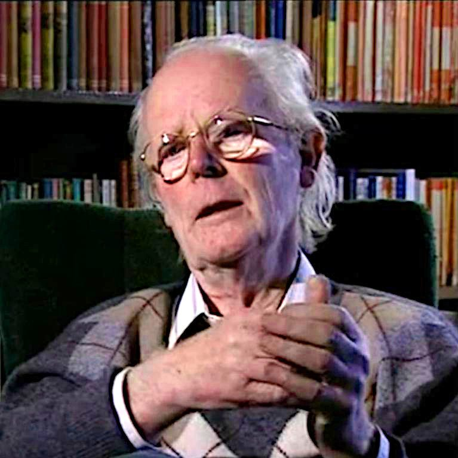
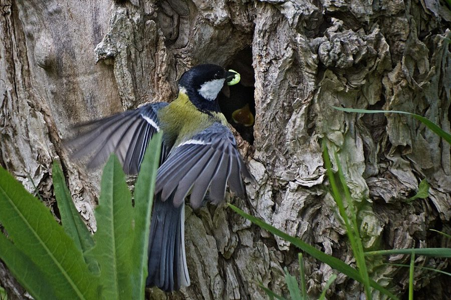
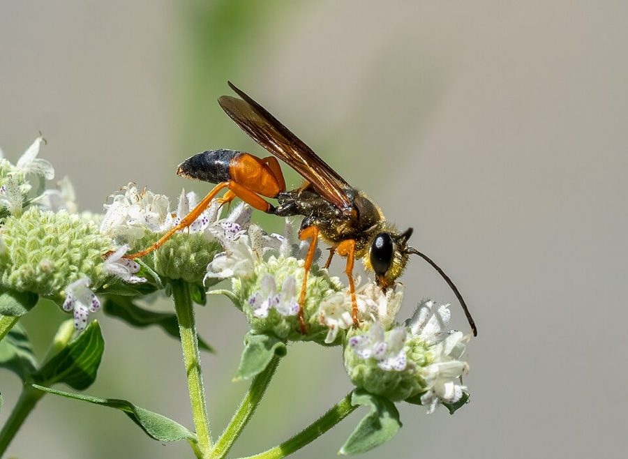

the language of convenience
… This is the language of convenience.
图方便的说法
作者先打招呼：把个体当成一心为自己基因的机器，只是讲起来方便，章末再换回「单个基因」的说法。全书他常这样提醒，读到「动物想要」时记得这层。
第 5 章的前半。前四章立起了「基因造身体、身体替基因活」的框架，这一章第一次拿它解释一种具体的行为：同类之间打架。问题是：既然每台生存机器都只为自己的基因，动物为什么不趁机把对手打死？Dawkins 借来 Maynard Smith 的博弈论，用一个「鹰和鸽」的简化模型来回答，再一步步加角色、换规则。读的时候抓两条线：「稳定」是什么意思，以及它为什么不等于「对大家最好」。

第 4 章停在「基因只能预先给大脑编程，具体怎么做由身体自己决定」。这一章接着问：同一种动物的两台生存机器碰到一起，预先编好的打法该是什么样？第 1 段作者说明，这一章暂时把整个个体当作「自私的机器」来讲，这是图方便的说法，章末（下一页）才回到单个基因。第 57 段又预告：亲属之间这套说法不灵，那是第 6 章的事。
打斗时「手下留情」看起来像利他。自私的基因怎么解释它？
读的时候带着这几个问题。不用先找答案，读完回来对照「检查一下理解」。
这一页是一条典型的「提出谜题，搭个简化模型，再一点点放宽」的路。§1、§2 从真实动物出发：Lorenz 说动物打架像戴着拳套的比赛，作者先说这话有夸大，再说哪怕只有几分真，也得解释。§3 换了频道，从动物跳进博弈论，给出 ESS 的定义，立起只有鹰和鸽两种角色的模型。§4 是全页最硬的一段：算账，算出一个稳定比例，然后突然转到加油站老板的价格同盟，读到这里会觉得跳，那是作者在说人类也逃不开同样的逻辑。§5 往模型里加「看对手出招」的角色，最后回到象海豹和大山雀，提醒数字一变结论就变。§6 换一种不流血的比赛，消耗战，落在「扑克脸」上。
作者落在哪：动物打斗的克制，不必用「为了物种」来解释：在一群各为自己的个体里，能长久留下来的打法，是多数个体都这样打时谁也占不到便宜的打法。这种稳定防得住背叛，却不一定对大家最好。
这一页是原书第 5 章的第 1–6 节。原书各章没有小标题，粗体的节名是本站起的，下面是这一节第一段开头的几个词，在电子书里搜它就能跳过去。读完打个勾。
先把这一页用到、作者默认你懂的几个概念讲一遍。讲的是概念本身，作者拿它推出什么，读原书时自己看。前几章讲过的生存机器、基因库、类群选择，点进去看。
Maynard Smith 和 Price 1973 年在《自然》杂志上提出的概念。「策略」不是动物想出来的计谋，是预先编好的一套行为规则，比如「先吓唬，对方动手就跑」。一个策略叫 ESS，是说：种群里大多数个体都用它的时候，少数改用别的策略的个体，得分不会更高，于是改不过来。严格的定义还多一条：要是改用的个体得分正好一样，ESS 对付它们时的得分，还得高过它们彼此相遇时的得分；第 25 段的还击策略者就栽在这一条上（见「对照今天」）。它和博弈论里的纳什均衡是近亲，区别在于没有谁在算计，是自然选择替它们「算」。打个比方：一个开源社区里大家都按某种代码风格写，你一个人换风格，只会处处碰壁，所以风格稳住了；这种风格未必是最好的。
在这一页：第 12 段给出定义，后面每一个模型都在问同一个问题：这个策略是不是 ESS。作者 1989 年在注 21 里补了一个更直观的说法。
两个个体争一样东西，只有两种打法：鹰一上来就全力打，直到自己重伤才退；鸽只摆架势，对方一动真格就跑。鹰对鸽稳赢，鹰对鹰两败俱伤，鸽对鸽耗时间。关键在于一种打法好不好，要看种群里别人怎么打：鹰少的时候，当鹰到处占便宜；鹰多了，当鹰天天挨打，当鸽反而划算。所以两条「平均得分」的线会交叉，交点就是稳定比例。鹰、鸽只是名字，和这两种鸟的脾气无关。
在这一页：第 13–21 段的主角。第 22–25 段在它上面加了三种看对手出招的角色，译名是译本：「还击策略者」、恃强凌弱者、试探性还击策略者。
同一个稳定比例可以有两种实现：一种是种群里有一部分个体天生总当鹰、其余总当鸽，两种基因按比例并存，遗传学叫「稳定的多态性」；另一种是每个个体都一样，每一场按同一个概率掷骰子决定这一场当鹰还是当鸽。数学上两者等价。第二种有个要求：骰子必须是真随机，对手猜不出你这一场出什么。这和石头剪刀布一样，有规律的出法会被人利用。
在这一页：第 21 段。注意这一段电子书用错了图：「namely 16 2/3」的地方应是 7/12，下一句的「7:5」才是对的。
Maynard Smith 1974 年分析的另一种比赛：没有人受伤，双方只是对峙，谁先撑不住谁走，赢家拿走资源，但双方都付出了等待的时间。它像一场两个人的拍卖，出价用的是时间，不同之处是输家也要付钱。结论有点反直觉：任何固定的「撑到几分钟就走」都会被人利用，稳定的做法是每次撑一个随机的时间，平均下来正好等于资源值多少时间。
在这一页：第 27–31 段。作者拿它推出「扑克脸」：不能让对手看出你什么时候要放弃。
先猜：种群里几乎全是鸽子，混进 1% 的鹰。用书里的计分跑下去，鹰会把鸽子赶尽杀绝吗？种群的平均得分会比「全是鸽子」时高还是低？再点「跑 50 代」验证。
每一代，得分比种群平均高的策略份额上涨，低的下降（这叫复制动态）；另有极少量的突变，让没出现的策略也能混进来。上面三个滑杆是计分规则，默认就是书里第 14 段的数。先直接点「跑 50 代」。
需要浏览器打开脚本才能运行。
这个模拟器没有放第 22–25 段的还击策略者、恃强凌弱者和试探者：书里没有给它们的计分，作者在 1989 年的尾注里还说，原论文对它们的结论算错了（见下面的尾注一节）。换一套计分，结局就不同，这正是第 26 段的告诫。
按在书里出现的顺序排，标题前是节号。只讲到读懂这一页需要的程度。

第 6 段引的 On Aggression 是 Lorenz 1963 年的德文书，1966 年出了英译本，在当时很畅销。书里说，同种动物的打斗大多是有规则的仪式，有「投降」的姿势，胜者见了就收手，这样物种才不至于自相残杀。作者在第 7 段一面承认这种说法「至少有几分真」，一面点出 Lorenz 是「为了物种的利益」派：他的解释正是这本书第 1 章反对的那种。

第 10 段说，把打斗当成成本收益来算，是 Maynard Smith 和合作者用博弈论讲清楚的；作者特意补了一句，他「通常不被看作动物行为学家」，他原本学的是工程，后来转行做遗传和演化理论。鹰鸽是他设的最简单的情形（第 13 段），还击策略者、恃强凌弱者、试探者出自他和 Price 1973 年的论文，消耗战出自他 1974 年的论文；下一页的不对称竞赛是他和 Parker 合作的。
海豹里体型最大的一类，南象海豹的雄性可达三四吨，鼻子像短象鼻。繁殖季节，雄性在海滩上争夺一群雌性，打赢的那头能和几十头雌性交配，大多数雄性一辈子也没有这个机会。第 9 段用它说明挑战霸主的代价：守着妻妾群的那头多半是身经百战的好手。第 26 段又用它说明奖赏极高时打得凶是合算的。

欧洲最常见的小型鸣禽之一。第 26 段说它喂雏的时候平均每三十秒就要抓到一只虫，白天的每一秒都宝贵。作者拿它和象海豹对照：在鹰鸽模型里，奖赏、受伤、耗时三个数的相对大小一变，稳定的打法就变了。他接着承认：对真实动物的这些得失，当时知道得太少，还定不出数字。

第 26 段那句「我们知道得太少」后面有个星号。1989 年的尾注补了作者自己参与的研究：Jane Brockmann 观察北美的大金掘土蜂，每只雌蜂要么自己挖洞，要么钻进别人挖好的洞。她和 Alan Grafen、Dawkins 1979 年在《理论生物学杂志》上发表的分析认为，新罕布什尔的那个种群符合混合 ESS：两种做法得分相当，每只蜂按一定概率选择；密歇根的种群没找到这样的证据。
按节排，每节前面是分节地图里的节名。标着「每个字都认识」的，是熟词生义、习语和反话，最容易读错。灰色的那几个字是原句里的位置，在电子书里搜它就能找到。
对着中译本（40 周年增订版）读的时候看这一节。下面是译本这几节和这一页尾注里会让人读错的地方：灰字是英文原文那一处的几个词，在英文电子书里搜它；方框里是译本的原句，在译本电子书里搜它。措辞别扭但意思没错的不收。全书的勘误汇总在译本勘误。
… If B is an elephant seal …
译本：「如果B是一只象形海豹」
elephant seal 通称象海豹，是海豹的一类，鼻子像短象鼻。本章第 26 段还会出现，指的是同一种动物。
… it has taken J. Maynard Smith …
译本：「但只有史密斯才能有力和明确地表述这种观点」
Maynard Smith 是一个复姓，不是「史密斯」。译本正文一律叫他「史密斯」，尾注里又叫「梅纳德·史密斯」，读者容易以为是两个人。全书都是同一位 John Maynard Smith。
… not normally regarded as an ethologist …
译本：「人们通常并不认为他是一位生态学家」
ethologist 是动物行为学家（研究动物行为的学科，Lorenz、Tinbergen 那一派），不是生态学家。这句是说：这件事动物行为学家早就隐约知道，却要一位「圈外人」Maynard Smith 来讲清楚。同一段前面的「个体生态学家」也是 ethologists。
… only two sorts of fighting strategy …
译本：「假定有一个特定的物种叫“鹰和鸽子”」
原文说：假定某个物种的种群里只有两种打法，分别叫「鹰」和「鸽」。鹰和鸽是两种策略的名字，同一个物种里的个体非鹰即鸽。
… Within broad limits the actual numerical values …
译本：「在现实中，实际的数值对分析并无多大意义」
原文是「在很宽的范围内，具体数值对分析没有影响」，并没有「在现实中」。这个限定要紧：受伤的代价一旦小于赢的好处，结论就变了（全是鹰也稳定），可以在上面的模拟器里试。
… the stable ratio, if you work …
译本：「鸽子同鹰的稳定比例为」
原书这里的分数是图片，译本电子书里没有显示，只剩空白。原文是：鸽子占 5/12，鹰占 7/12。下一句「不再是」后面空着的也是 7/12。
… The average pay-off to an individual …
译本：「个体的平均盈利被证明为」
空白处依次是：7/12 的鹰和 5/12 的鸽，平均每场 6 1/4 分；6 1/4 分比 15 分少很多；1/6 的鹰和 5/6 的鸽，平均每场 16 2/3 分；鹰占 7/12 的群体。
… have the same probability of behaving …
译本：「在我们的具体例子中这个概率就是」
空白处应是 7/12。英文电子书这里显示的是 16 2/3，那是用错了图（见分节地图），两边都别信，按上下文是 7/12，下一句的「7 比 5」可以对上。
… Retaliator looks superficially like an ESS …
译本：「试探性还击策略之所以看上去和一个ESS如此相似」
原文主语是还击策略者，不是试探性还击策略。整条注讲的是：还击策略者看似 ESS，因为在它们中间别的策略都不比它强；可鸽子一样不差，会漂进来。主语一错，这条注就读不通了。
… digging a long bore-hole into the earth …
译本：「一开始会在树干中打出一个较长的圆孔」
原文是在泥土里挖一条长长的地洞，洞底是一个空室。掘土蜂（digger wasp）的名字就由此而来。
… does not pay to enter a nest …
译本：「尽管侵占一个巢穴不需要付出太多努力」
原文说：钻进一个还有主人的洞是不划算的，可钻进去的蜂分辨不出哪些洞被遗弃、哪些还有主。这正是挖洞和钻洞两种做法会平衡在某个比例上的原因。
An ESS is stable, not because it is particularly good for the individuals participating in it, but … immune to treachery from within.— §4 第 19 段。本站译：ESS 之所以稳定，不是因为它对参与其中的个体特别有好处，而是……它不怕来自内部的背叛。
这是全章最该记住的一句，也最容易读漏。它把两件事拆开：「稳定」和「好」。人们常以为自然界留下来的总是最好的安排，作者说不对：留下来的是改不动的安排。全是鸽子对每个人都更好，可一只鹰就能把它拆掉。下一页他还会把这个想法推到基因库，第 12 章的「好人终有好报」也从这里出发。
We must be careful not to draw conclusions that result simply from our own arbitrary choice of numbers.— §5 第 26 段。本站译：我们得小心，别把仅仅来自我们自己随意选定的数字的东西，当成结论。
作者给自己的模型泼的冷水。7/12 这个比例完全取决于第 14 段那几个随手定的分数；不随数字变的，是后面那几句：会出现 ESS，ESS 不等于群体最优，常识会骗人。上面的模拟器就是让你自己检验这句话：动一动滑杆，哪些结论变了，哪些没变。
正文里的星号是 1989 年第二版加的，点了跳到书后的尾注。下面是这一页的每个星号：注里说了什么，值不值得现在就点开。英文是星号前紧挨着的几个词，在电子书里搜它就能找到那个星号。
… cannot be bettered by an alternative strategy.*
作者给 ESS 换了一个更省事的说法：ESS 就是一个对自己的拷贝表现良好的策略。理由是：一个成功的策略会占满种群，于是它碰到的对手大多是它自己，对付不了自己就成功不了。他承认这个说法不如 Maynard Smith 的定义严谨，而且不完整，代替不了原定义，好处只是抓住了直觉。值得点开，第一段就说完了。
… retaliator, emerges as evolutionarily stable.*
作者直说：这句是错的。原论文就有这个错，他照搬了，还加上一句更不该说的「试探者几乎是 ESS」（几乎是 ESS 就是不是）。问题在于：还击者中间，鸽子得分一样，会悄悄漂进来；鸽子一多，别的策略就有机可乘。他说 Gale 和 Eaves 的动态模拟算出，真正的 ESS 是鹰和恃强凌弱者的稳定混合。一定要点开。译本这条注把第一处主语译错了，见下面的译本勘误。
… benefits of various outcomes in nature.*
正文说当时对真实动物的得失知道得太少，注里补上作者自己参与的掘土蜂研究（见上面「书里的人和研究」）：靠对每只蜂一生时间的详细记录，算出新罕布什尔那个种群里「自己挖洞」和「钻别人的洞」两种做法得分相当，证据表明这是一个真正的混合 ESS（密歇根的种群没找到这样的证据）。注很长，前半段讲掘土蜂怎样麻醉猎物，还顺带引了达尔文对姬蜂的感慨。想看 ESS 怎样落到田野数据上，值得读。
读完这一页的几节再看。下面是作者在这几节里的论点，由本站按论点重新组织，不按原书的顺序；每条下面是依据所在的段落，拿不准就回书里那几段再读一遍。
作者认为 Lorenz「打斗像比赛」的说法有夸大，但至少有几分真，所以自私基因的理论必须解释它。第一步是看到全力厮杀有代价：杀了一个对手可能便宜了别的对手，挑战强者可能自己送命。
§1 第 6–7 段，§2 第 8–10 段借 Maynard Smith 的 ESS：能长期留下来的，是多数个体采用后谁也改不过来的策略。鹰鸽模型里，鹰少时当鹰占便宜，鹰多时当鸽划算，于是种群停在一个稳定比例，而不是来回振荡；这个比例来自作者自称随意的计分。
§3 第 11–14 段，§4 第 18 段稳定点上每个个体的得分，远低于人人当鸽子时；类群选择会预言「鸽子联盟」，可一只鹰在联盟里大赚特赚，联盟必然从内部瓦解。人类靠有意识的远见能结成对大家有利的同盟，但像价格同盟一样，也总在破裂的边缘。
§4 第 19–20 段1976 年的正文说，五种策略混战，只有还击策略者稳定，种群会以还击者和试探者为主：先摆架势，挨打才还手，偶尔试探一下；作者说这和多数野生动物的实际相去不远。1989 年的尾注改了口：还击者不是 ESS，这个错原论文就有，真正稳定的是鹰和恃强凌弱者的混合；尾注没有再说「戴拳套」该怎么解释。正文第 26 段他自己也提醒过：结论不能来自随手定的数字。
§5 第 22–26 段，注 22消耗战里任何固定的坚持时间都会被人利用，稳定的是每次坚持一个不可预测的时间；所以透露何时要放弃的信号会被淘汰，说谎也稳定不了，留下来的是扑克脸。
§6 第 28–31 段合起来：这一页把「自私的个体」和「克制的行为」接上了：克制不是牺牲，是在别人也这样做时，对自己最划算的打法。作者真正要读者带走的，是 ESS 这种想问题的方式：先问「大家都这样做时，谁改得过来」，而不是「怎样对群体最好」。
这本书 1976 年出版。下面挑出这一页里能被后来的研究检验的说法，分「书里 / 当时 / 今天」三栏，并给一个结论。结论判的是标题里「书里的说法：」后面那一句。全书的这一节汇总在对照今天。
读完作者的论点，再看它站不站得住。每一块摆出三样：主流怎么看，作者怎么看，本站的评论。最后一句是本站对这一页的总体判断。
主流看法：是。博弈论里早就区分了均衡和「对所有人最优」：囚徒困境、公地悲剧都是人人理性却人人吃亏的例子。演化博弈论把同样的区分带进了生物学。
作者的看法：ESS 稳定只因为它不怕内部的背叛；人人当鸽子更好，却挡不住一只鹰。人类靠有意识的远见能结成同盟，但同盟总在破裂边缘（第 19–20 段）。
本站的评论：这是全章最有力、最经得起时间的一点，值得带进日常：很多「为什么大家都知道不好却改不了」的事，问一句「谁先改谁吃亏吗」就清楚了。要补的是：人类维持合作的手段比作者这里说的多，制度、声誉和惩罚都能把对大家好的约定稳住，Ostrom 研究公共资源的自治管理就是一例（她因此获 2009 年诺贝尔经济学奖）。作者在第 12 章也会回到这个问题。
主流看法：不是。Lorenz「避免物种自相残杀」的解释，在 1970 年代以后的行为生态学里基本被放弃，克制被解释成对个体自己划算：打斗有伤、有时间成本，实力悬殊时打下去不值。
作者的看法：Lorenz 是「物种利益」派，他强调的克制有夸大，至少有几分真；克制可以用个体层面的 ESS 来解释，不需要群体利益（第 6–7、19、26 段）。
本站的评论：在论证的方向上，作者赢了，后来的研究也站在他这一边。但这一页拿来支持他的，主要是一个计分随意的模型，不是野外数据；他自己也说当时定不出真实的数字。所以这一页证明的是「个体层面的解释说得通」，至于真实动物为什么克制，后来更多要靠评估对手的模型和野外测量来回答。
主流看法：鹰鸽这类简单模型的价值在定性结论（会出现稳定混合，稳定不等于最优，常识会骗人），具体比例只是示例；拿模型解释某种动物，要先在野外测出得失。
作者的看法：模型是自然里不发生、却帮人理解自然的东西；别把随手定的数字推出的东西当结论（第 22、26 段）。可他在第 25 段还是把还击策略者稳定当成了结论，1989 年才在注 22 里撤回。
本站的评论：这正是这一页最好的一课，而且作者自己当了反面例子：同一个模型，只靠静态的推理，得出「还击者稳定」；让它一代代真的跑起来（Gale 和 Eaves 的动态模拟），答案变成「鹰和恃强凌弱者混合」。这和他在第 18、29 段提醒的「光用文字推理会骗人」是同一课。他公开认错，是科学写作的好榜样。读这本书后面的模型时，都可以用这把尺子：哪些结论不随数字变，哪些随。
本站的总体看法：这一页最值得带走的是 ESS 的思路和「稳定不等于对大家好」，这两点经得住后来的检验。至于具体的数字、哪种策略稳定、动物实际有多克制，要打折扣：模型是示意，作者自己改过口，野外的答案比书里复杂。
先在心里答，再点开。答错的那题，回书里把对应那一节再读一遍。
一是对手不止一个：杀了 B，可能等于替 C 除掉了对手，自己反而吃亏。二是挑战一个守着资源的强者：对方多半是久经考验的好手，打起来自己可能伤得更重，不如先养壮了再说。
多数个体采用它之后，任何别的策略都胜不过它。策略不是动物有意识想出来的，是预先编好的行为规则，动物只是表现得好像在照着做。
鸽对鸽，赢家得 50 减去 10 的时间成本，输家扣 10，平均 15 分。那只鹰每场都对上鸽子，每场稳拿 50 分，远高于鸽子，所以鹰会扩散开来。
低得多（6 1/4 对 15）。因为联盟里一只鹰的得分高得多，鹰的基因会扩散，联盟从内部被背叛瓦解。稳定靠的是不怕背叛，不是对大家好。
他承认这是错的：在还击者中间，鸽子得分一样，会慢慢漂进来，之后别的策略就有机可乘。他引的动态模拟说，真正的 ESS 是鹰和恃强凌弱者的稳定混合。
如果大家只在真要坚持时才竖起颈毛，对手一见就会退，于是说谎的（不打算坚持也竖毛）占便宜、变多；说谎的多了，揭穿虚张声势的又占便宜。说真话、说谎都会被利用，什么都不透露才稳定。
用一句话说这一页，写给一个没读过的人。
想一想：你的工作或生活里，有没有一种「人人都知道换个做法对大家更好、却谁也不先换」的局面？它是因为谁先换谁吃亏吗？有什么办法能让大家一起换？
读过又忘了，从这里想起来。挑的是这一页最值得记住的模型、动物和说法，不按原书顺序；每条后面是节号，想细看就回书里那一节。全书各页的这一节都收在全书回顾。
一句话：动物打斗手下留情，不是为了物种，是因为在大家都这样打的种群里，谁也改不过来；这样的稳定防得住背叛，却不一定对大家最好。
鹰拼命，鸽只摆架势。鹰少时当鹰划算，鹰多时当鸽划算，种群停在一个比例上：用书里的计分是 7/12 的鹰。
§4全是鸽子时人人每场 15 分，稳定比例下只有 6 1/4 分。可一只鹰在鸽群里每场 50 分，联盟从内部被背叛。
§4人类能靠远见结盟抬价，但总有人忍不住偷偷降价捞一笔；降价潮一过，老板们的远见又占上风，结成新的同盟。作者说：这对我们其余的人可是不幸。
§4正文说只有还击策略者是 ESS；1989 年的尾注说这句错了，鸽子会漂进来，真正稳定的是鹰和恃强凌弱者的混合。
§5消耗战里，谁露出要放弃的迹象谁吃亏，说谎也稳定不了。进化留下来的是不动声色，放弃来得突然而无法预料。
§6